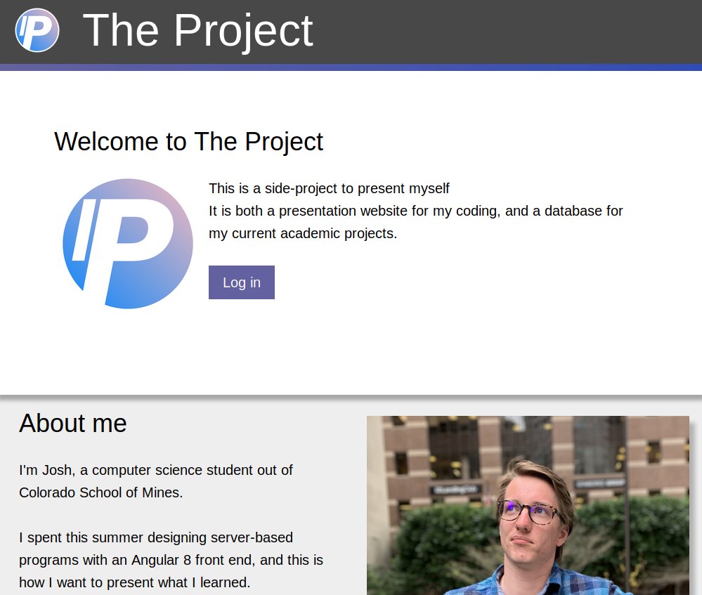

A computer once beat me at chess, but it was no match for me at kick boxing×
I'm Josh, if the metadata didn't work.
I'm in web programming to learn how to be a more versatile programmer.
I spent my summer doing program development at LGS Labs,
until the end of my project where it turned out that my team had no full stack developers and needed a webapp.
I was thrust into it, and I actually enjoyed it a lot!
The part that I'd actually like to share with the TAs and all is what I think is a cool side-project, which this class might help me continue to develop. It started out as a personal website (just with some static info to practice my CSS), and now I'm developing it into a public site that I can share on my resumes. With credentials, it should show:
Here's a code snippet of the backend:
package main
...
func main() {
r := gin.Default()
r.NoRoute(func(c *gin.Context) {
c.File("./public/dist/webapp/index.html")
}
})
And here's an image of the front-end:
| Class | Days | Times |
|---|---|---|
| CSCI445 | Tues | 4-4:50 |
| HASS200 | Tues, Thurs | 12:00-1:15 |
| CSCI470 | Tues, Thurs | 8:00-9:15 |
| Taste | Color | Coolness | ||
|---|---|---|---|---|
| Fruit | Apples | 5 | 7 | 2 |
| Oranges | 8 | 4 | 5 | |
| Bananas | 3 | 2 | 9 | |
| Beans | BEANS ARE NOT A FRUIT | |||
| Average | 5.33 | 4.33 | 5.33 | |
| Day of the week | Score |
|---|---|
| Monday | 3 |
| Tuesday | 1 |
| Wednesday | 5 |
| Thursday | 7 |
| Friday | 9 |